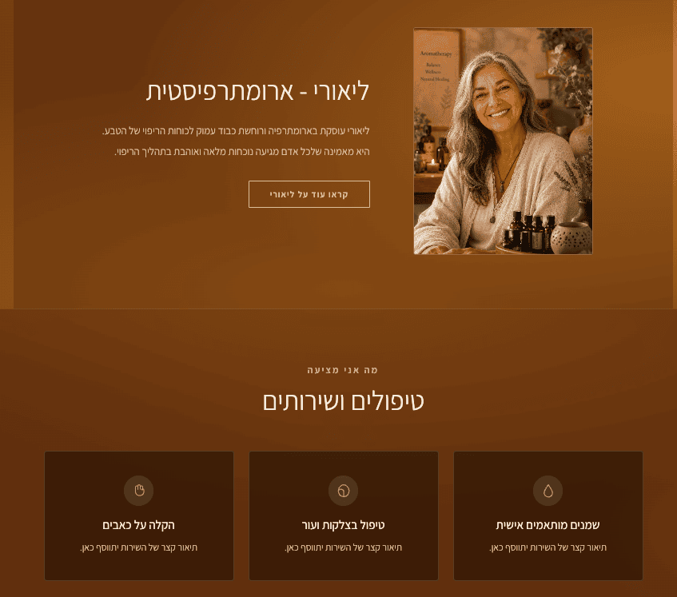
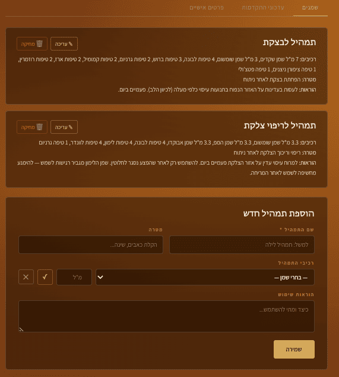
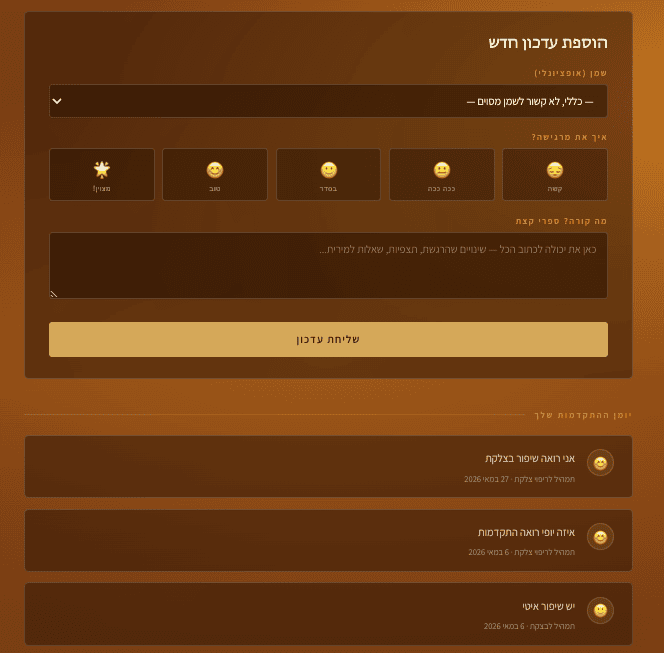

Website for a Therapeutic Field
A sample website that lets you present and market your therapeutic practice, manage clients, and receive feedback on treatment status and progress - creating direct, documented communication with your clients.
A homepage that presents and markets you - the essence of your unique approach to treatment.
This page is designed so people get to know you and your practice, based on a needs analysis built together with you.

A personal business management page - manage clients, suppliers, inventory, and more.
For client management, you can receive direct feedback on treatment progress, update ongoing or completed treatments, and more.
This page is built around your specific needs, the nature of your business, your service, and day-to-day activity.

A page for your clients. This is where clients receive full treatment instructions from you, and give you feedback on their progress - creating a direct, personal connection with every client, fully documented and conveniently organized.

Work in a Therapeutic Field?
A website that helps you manage clients, document treatment progress, and stay in direct, ongoing contact.
Want to Build a Website?
Whether it's a portfolio site, a management system, or something else entirely - I'd love to hear what you need.